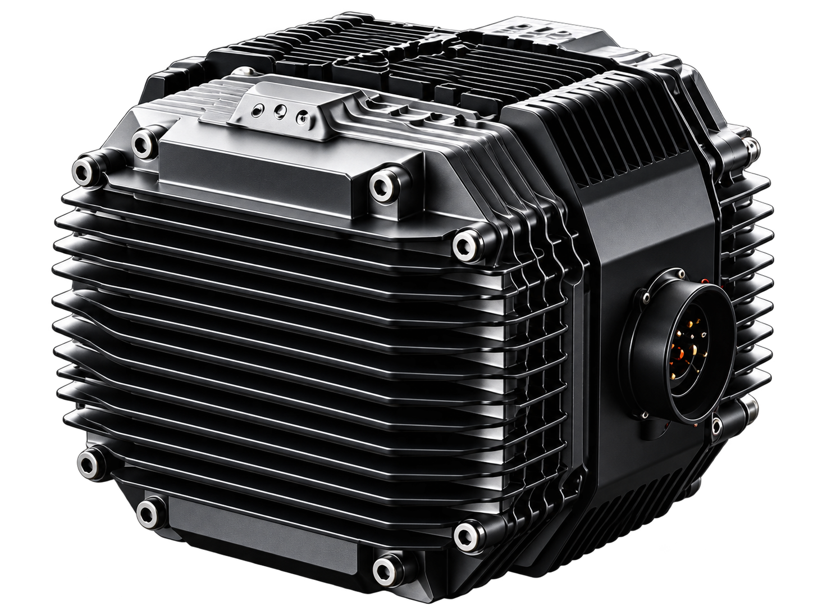
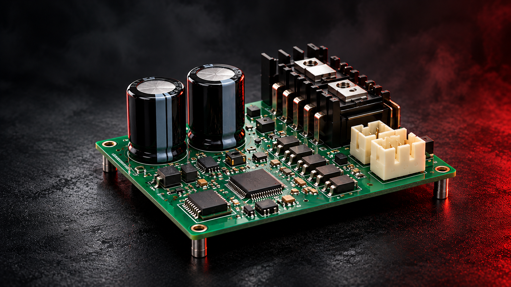
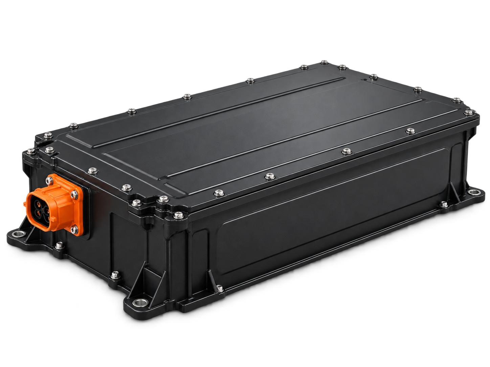
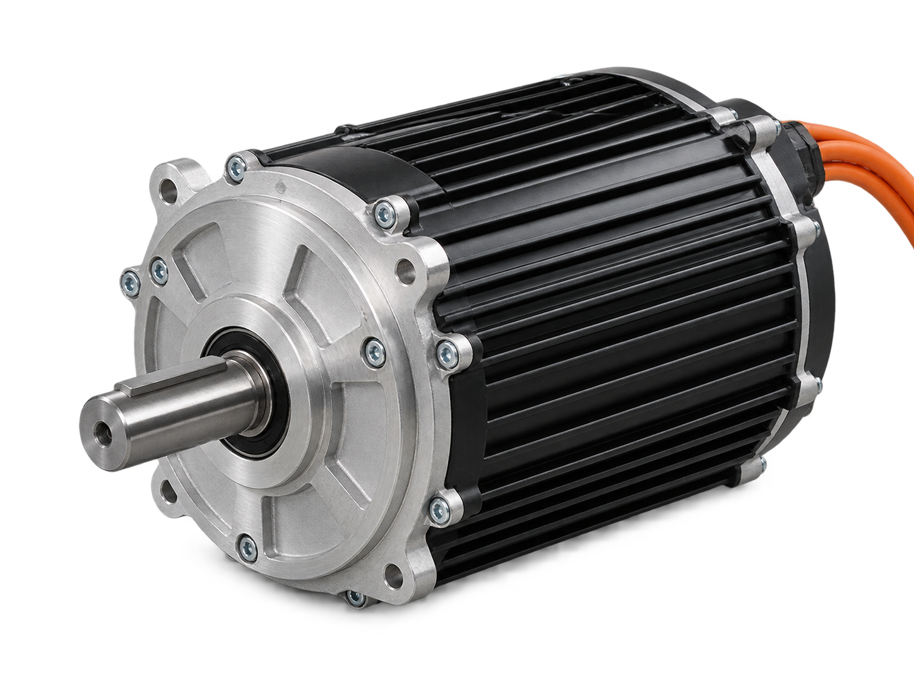
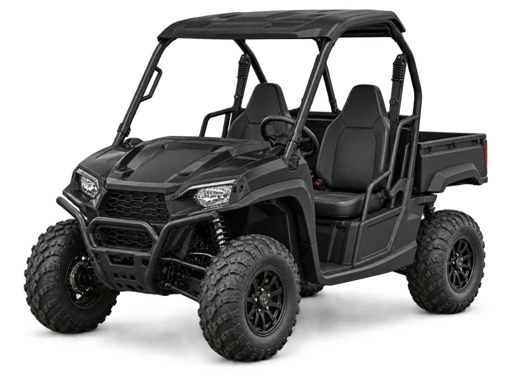
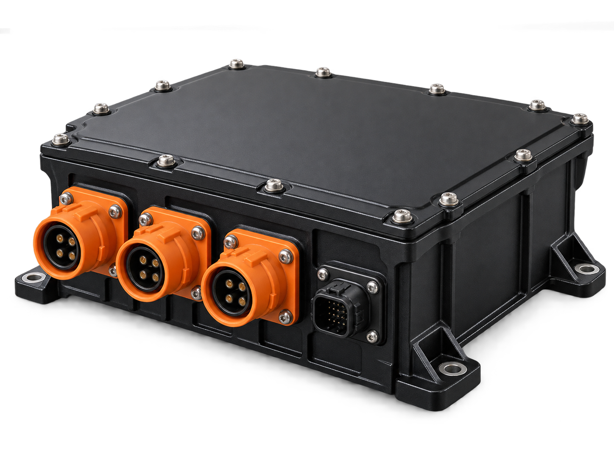

监测
实时采集电压、电流、温度、转速等关键参数，持续监控系统运行状态。

PXID CONTROLLER
PXID 控制器作为整车系统的核心枢纽，连接电池、油门、刹车、电机与仪表等关键部件，协调能量与信号流动，确保整车高效、安全、平稳运行，是电动出行的“大脑”。
控制更智能 · 出行更美好CONTROL DRIVES
A BETTER RIDE
提供直流电能
电能输入加速信号
信号输入制动信号
信号输入输出三相电流
驱动动力
输出运行数据
车端状态
连接手机 App
故障诊断方向
PXID | CONTROL SYSTEM
高集成的控制硬件设计，
让每一次动力输出都更加稳定可靠。

CONTROL EXPERIENCE
PXID 控制器根据不同工况，动态调整控制策略，让每一次动力输出都更平顺、更自然、更可控。
当前场景
通过精确的扭矩控制和响应策略，抑制突发冲击，让起步更平稳、自然。
PXID PROTECTION
多重保护机制实时监测运行状态，在异常发生时快速响应，
并提供明确的恢复机制，保障系统持续、安全、稳定运行。
SAFER
CONTROL
MORE
POSSIBILITIES
实时采集电压、电流、温度、转速等关键参数，持续监控系统运行状态。
基于预设阈值与算法模型，快速识别异常类型与严重级别，触发保护机制。
根据故障类型，执行限流、降额、停机等保护动作，防止问题扩大。
当异常解除且条件满足时，系统自动或手动恢复运行，确保业务连续性。
THERMAL DESIGN
通过合理的热源分布、结构设计与材料选择，
构建高效、可靠的被动散热方案，保障控制器在复杂工况下稳定运行。
合理规划功率器件、驱动电路等主要热源的布局，通过导热界面与结构件紧密接触，快速将热量传导至外壳散热体。
采用大面积散热鳍片结构，增大散热表面积。结合高导热的铝合金材料，提升热量传导效率，实现自然对流下的稳定散热。
考虑实际安装空间与气流路径，确保散热鳍片周围有足够的通风条件，避免热量积聚，保障控制器在各种工况下的可靠运行。
PXID ECOSYSTEM
通过车端总线、调试工具、联网终端，
与整车系统协同，构建开放的信息链路。
CURRENT STATUS
支持主流车端总线协议
（如 CAN），与整车系统对接。
提供调试工具与参数标定能力，
支持开发与量产阶段。
支持本地与远程固件升级，
提升维护效率。
对接整车开发流程，
提供技术支持与配套服务。
PERFORMANCE & RELIABILITY
从材料到测试，从设计到验证，确保每一次运行都稳定、可靠。
先定义整车，再确定控制器。从整车需求出发，系统化准备关键资料，确保选型准确、导入高效。
| 项目模块 | 需准备的资料 / 关键信息 | 影响的决策 | 参考示例 |
|---|---|---|---|
 电池平台提供能量基础 |
|
| 例如： 72V 锂电，持续电流 80A BMS：CAN 2.0B |
 电机资料确定驱动对象 |
|
| 例如： 永磁同步电机 15kW 额定转速 3000rpm 极对数 4，线电阻 12mΩ |
 整车工况定义应用边界 |
|
| 例如： 工程车，整备质量 1200kg 最高车速 40km/h 爬坡 30%，连续作业 2h |
 接口与空间匹配安装条件 |
|
| 例如： 高压接口：橙色 HV 连接器 通信：CAN + DI/DO 安装空间：200×150×80 mm 冷却方式：水冷 |
标准化的导入流程，打通从需求到验证的关键环节，确保控制器快速、可靠地应用到整车。
收集整车需求，明确
性能目标与应用场景。
确认电气、通信、
安装与冷却等接口要求。
基于需求选择合适的
控制器型号并进行样测。
进行控制参数匹配与
整车功能调试。
完成样车实测，验证
性能、可靠性与适应性。
PXID CONTROL FOR MORE VEHICLES
覆盖多种应用场景，提供清晰的选型参考，
让控制器在合适的车辆与工况中发挥最佳性能。
轻量化车体
平稳高效，注重能耗与静音
物流配送 / 工程作业
高扭矩输出，稳定耐用
景区 / 园区 / 城市运营
持续运行，强调可靠性
CONTROL
DRIVES
A BETTER
RIDE
TECHNICAL RESOURCES
提供完整的技术资料与支持，帮助您快速完成选型、对接与验证。
FAQ
整理用户最关心的问题，帮助您快速获取关键信息。
需根据车辆类型、动力平台与使用工况逐项核对。请提供整车资料，由项目团队评估适配边界。
建议先确认电池、电机、整车工况以及接口和安装空间，再进行样件匹配与样车验证。
对应型号的规格、接口与验证资料请联系项目团队索取；可提供的范围以正式文件为准。
可将需求与现有整车信息提交给项目团队，双方评估开发范围、周期与交付条件。